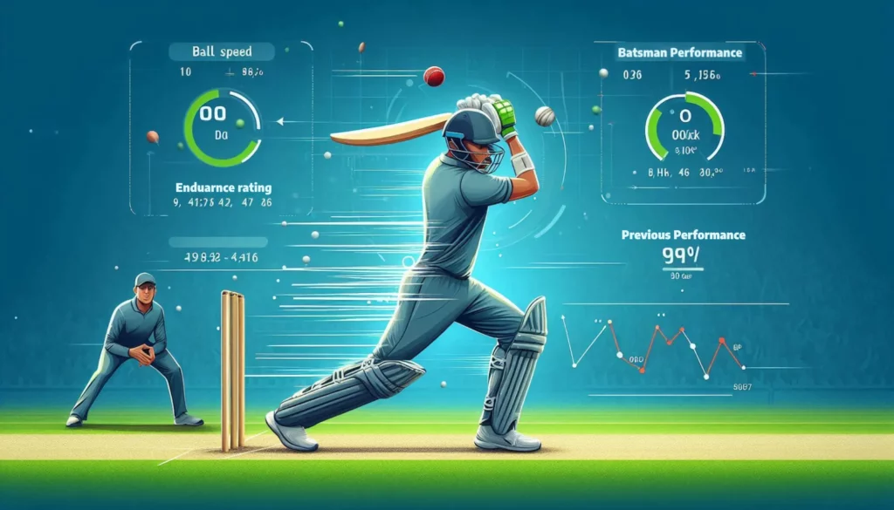

Sports Machine Learning Dashboard
In Progress
A machine learning model that predicts runs scored by cricket players based on historical performance, match conditions, and opponent strength. Built with Python, scikit-learn, and XGBoost to analyze player form and provide data-driven insights for team selection and strategy.
Python
React
PostgreSQL
Docker